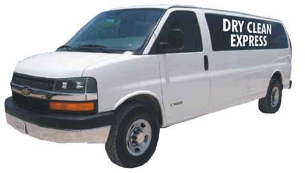

Services
Washing


we offer the best laundry services, our drycleaning services is the best compared to other companies around. Check out our wash, sparklin white,We give you the very best wash you can ever imagined of
Ironing
Picking up and Delivering
Laundry and Dry cleaning pickup and delivery service business drycleaning-laundry-business 4For most city people, it’s not just about getting somebody else to do the laundry. Many people don’t just have the time to take their dirty clothes to the cleaner’s shop/office and return a couple of days later to pick them up. Customers want convenience. They’ll prefer a service that comes over to the house or office to pick their laundry and deliver it back to them once they’re all neatly washed, starched, pressed and ready to wear. This sort of people who are busy career professionals and uniformed service men (like the military) who work long hours throughout the week and spend a lot of their evenings in traffic. They have a need to look clean and smart at the office but hardly have the time or energy to do their own laundry. This segment of the market values convenience, timely pickup and delivery and well-washed and ironed clothes. As a result of this great need of our client we render the services of pickup and delivery of clothes to able our clients get the best of our services.